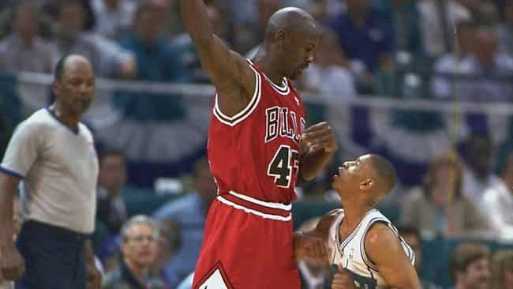

< < < Back
Happy 50th Michael – Return Of Kings
This past Sunday, Michael Jordan turned 50. He is an incomparable individual that transcends sports by way of his talent, achievements and most of all his character. As unarguably arguably the greatest basketball player to ever grace the hardwood, there must be something elevating him to such a high level that, in all honesty, will probably never be replicated.
We all know about his talents and skills, but many athletes have come and gone with incredible talent. We know there are players more physically talented than him (i.e., Lebron) and there are also players with more championships than him (i.e., Bill Russell). So what is it about Michael that made him so great? Initially, nobody can deny his determination and dedication to succeed. Anyone familiar with his legacy knows about his fierce competitive nature that drove him to be so successful. Only a few individuals actually put forth such an abundance of effort on a consistent basis while remaining dedicated to their goals. If any of us, myself included, had even a tenth the dedication, effort and determination to reach our goals as he did, our lives would be incredibly more successful.
But there was a slightly lessor known trait he possessed…something you do not come across on a daily basis. His cockiness. And this was not your run of the mill arrogant bastard. He was at astronomical levels. He believed that he was the best and made no attempts to hide it. What do I mean? Well I put together a few anecdotes that demonstrate Michael’s unapologetic and downright cutthroat approach he implemented time and again:
The Shot
Everyone knows about the 1989 game-winning shot over Craig Ehlo to defeat the Cavs in the playoffs. But not everyone knows how cocky Michael was only a few years into his career. Here’s an interesting quote from a Chicago Tribune writer that covered the Bulls:
Although it’s difficult to believe now, the Bulls still weren’t a major story in Chicago because few considered them championship contenders. So there was limited media traveling. The only regulars were myself, Lacy Banks from the Sun-Times and Kent McDill from the Daily Herald. We’d all picked against the Bulls before the series, Lacy in three and Kent in four. I thought Jordan could win two games, but not three. So I had Cavs in five. The game was about to start and Jordan was pacing in front of the Bulls bench and scorer’s table, where we were sitting. Jordan’s mood was buoyant, as if he knew. So he stops and first points to Lacy and says, “We took care of you,” meaning Lacy’s prediction. Then he moves over to Kent and points and says, “And we took care of you.” Then he stops in front of me and points and says with a seemingly knowing smile, “And today we take care of you.”
The Cigar and Ferrari

From Chris Webber, who was playing against Jordan in a playoff series:
I’ll never forget, Jordan was sitting on his Ferrari and Pippen was right there and they have a cigar lit. We get off the bus and we have to pass them with a lit cigar. You want to talk about posturing? Forget Phil Jackson. You got Michael Jordan there behind the scenes smoking a cigar before the game, letting us know that he’s the Red Auerbach before the game even started. It was almost like, ‘I lit the cigar. I’m celebrating already. This is just a formality, you guys getting on the court tonight.
Again, the sheer audacity of a man who believes so much in himself that he not only preemptively celebrates a victory, but makes damn sure his competitor knows it too. That’s essentially like walking up to a girl, throwing her a towel and telling her it’s for cleaning up the sex fluids after you ravage her later tonight.
The Earring
Seems like just a pure mindfuck?
The day before game 4 of the Bulls Suns finals with the Bulls leading the series 2-1. Michael and Charles Barkley went golfing. They played 48 holes of golf. And Michael bought Charles a $20,000 diamond earring. Johnny asked MJ, “what did you do all that for?” Michael responded, “he won’t get in my way the rest of the series, what’s $20,000 to me? Charles thinks we’re great friends. I hate that fat f—.” Jordan dropped 55 in game 4 and Barkley never touched him once.
“Shoot It”

Pretty harsh. But hey, if you want to shut him up then beat him:
Series was tied at 2 and Hornets had a chance to win game 5 in Chicago. On the biggest possession of the game, Mugsy had the ball with the Hornets down 1. Jordan backed off of him and told him: “shoot it you f—ing midget.” Mugsy shot it, didn’t come close. A year later Mugsy actually told Johnny Bach that he believes that single play ruined his career. His shot never recovered.
Like anyone else however, he’s had his share of failures. He tried baseball to no avail. He divorced his wife and lost $168 million in the process. Stories of his gambling issues surface from time to time. His hall of fame induction speech was just terrible. But he commands a certain reverence and it is easy to see why. It was his absurd level of self-confidence that created this charismatic persona, one that morphed him into immortality. It oozed through our television sets and infected the general population, whether they were fans or casual observers, old or young, male or female. My grandparents do not speak English, but they know Michael Jordan. I had a strict TV cutoff time when I was a kid, but exceptions were made for Bulls’ games.
He made bold claims, would do outrageous things, only to back them up time and time again. Run your mouth and fail to deliver — you’re just a pompous ass. Run your mouth and not only deliver but destroy your competition in the process — you become an idol.
On a final, completely unrelated note, here’s his fiance. No surprise that after going through that hellish divorce, Michael went for something younger, hotter and foreign…a Cuban born model. To that I say Feliz Cumpleaños, Miguel.

Read More: Learn To Be An Alpha From Athletes